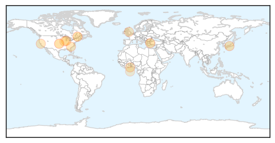
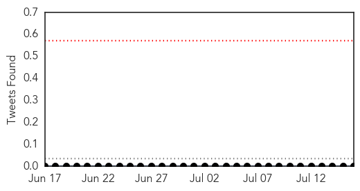

Influenza
30-Day Web Trend
1 alerts, 0 warnings
30-Day Twitter Trend
0 alerts, 0 warnings

Article Locations
Article Confidences
Top Articles:
- 0.997
- GSK Begins Shipping 2015-16 US Flu Vaccines
- 0.995
- GSK Begins Shipping 2015-16 U.S. Flu Vaccines
- 0.985
- GSK begins shipping 2015-16 US flu vaccines with focus on customer needs, volume, and speed
- 0.939
- Canine flu continues to spread across metro Atlanta
- 0.852
- News Scan for Jul 15, 2015
- 0.778
- Viruses, Not Bacteria, Reponsible for Many Pneumonia Cases
- 0.751
- July 16, 2015 Archives
- 0.751
- July 15, 2015 Archives
- 0.694
- Welsh Government Encourages Caution After Bird Flu Outbreak
- 0.691
- 11 million cedis urgently needed to fight bird flu
- 0.680
- Dog flu continues to impact metro Atlanta
- 0.529
- More Bird Flu Coming?
Top Tweets:
-
No tweets found for Jul 16, 2015
Measles
30-Day Web Trend
3 alerts, 2 warnings
30-Day Twitter Trend
0 alerts, 0 warnings

Article Locations

Article Confidences

Top Articles:
- 0.995
- Measles in The U.S.: Why Everyone Should Be Concerned
- 0.973
- Ottawa daycare is promising a ‘vaccine-free environment’ for kids. Public Health is not happy about it
- 0.908
- Inside The Incredibly Deadly Disease We Know Shockingly Little About
- 0.855
- In New Jersey, debating the value of mandated inoculations for children
Top Tweets:
-
No tweets found for Jul 16, 2015